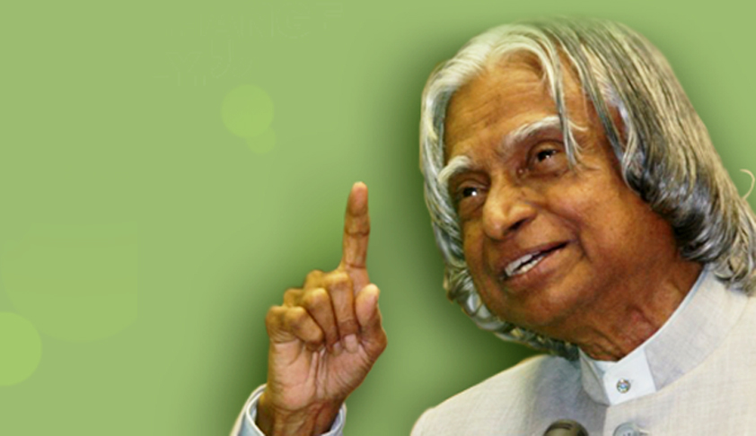

Dr. Abdul Kalam Autobiagraphy.

Dr.Avul Pakir Jainulabdeen Abdul Kalam
Dr. Kalam was an Indian aerospace scientist and politician who served as the 11th President of India.
Here's a time line of Dr. Kalam's life
- Kalam received 7 honorary doctorates from 40 universities.
- 1991-The Government of India honoured him with the Padma Bhushan
- 1990-The Government of India honoured him with the Padma Vibhushan for his work with ISRO and DRDO
- 1997- Dr.Kalam received India's highest civilian honour, the Bharat Ratna, for his contribution to the scientific research and modernisation of defence technology in India
- 1999-Dr.Kalam set a target of interacting with 100,000 students during the two years after his resignation
- 2012-Dr. Kalam was ranked number 2 in Outlook India's poll of the Greatest Indian.
- 2013-Dr.Kalam was the recipient of the Von Braun Award from the National Space Society
- 2014-Dr. Kalam recived degree in doctor of science Edinburgh University,
- 2019 Construction of Dr. A.P.J Abdul Kalam Science City started in Patna in February